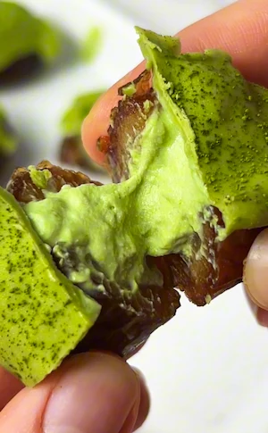

Matcha Cheesecake Dates (four ingredients, no oven, no mixer, endlessly customisable)
if you've been looking for a no bake treat that feels fancy but takes almost no effort, these matcha cheesecake stuffed dates are about to become your new obsession. four ingredients, no oven, no mixer, nothing complicated. just soft medjool dates filled with a creamy matcha yogurt filling, frozen until set, and finished with a drizzle of matcha white chocolate. they look like something you'd find at a cute health food café but take very little effort to make.
i've been really into stuffed dates lately as they feel very indulgent but also since they are so sweet i feel like i don't need more than 1 (ok maybe 2) to satisfy my sweet tooth. the possibilities are truly endless which makes them even more fun as you can change up the filling and unlock a completely different dessert. from cookie dough, nut butter, cheesecake filling, you name it. but this matcha cheesecake version might be my favourite yet. the filling is creamy, light, and has that earthy matcha flavour that balances the sweetness of the date so well. you can swap the yogurt for an actual cream cheese to get the most similar taste to cheesecake, but for a healthier more macro friendly version i love using greek yogurt as it gives the same vibe but feels lighter.
let's talk about the star ingredient: matcha. if you're new to baking and cooking with matcha, welcome, because it's such a beautiful ingredient to work with. ceremonial grade matcha has this vibrant green colour and a slightly grassy, earthy flavour with a gentle natural sweetness that pairs really well with creamy bases like yogurt and white chocolate. culinary grade matcha also works perfectly here and tends to be more affordable, which is great when you're adding it into a filling rather than drinking it straight. i personally go for an organic ceremonial grade matcha as i love how it adds more nutrients and benefits to the recipe. the amount in this recipe is around 1/2 a teaspoon to start, but honestly i'd encourage you to taste as you go and adjust to your own preference. if you love matcha, add a little more. if you're new to it and want something more subtle, a smaller amount gives you that hint of matcha flavour without it being overpowering.
now onto the yogurt: the recipe works with any yogurt of your choice, but the creamier the yogurt, the better the texture of the filling. a thick greek yogurt or a coconut yogurt are both fantastic options and give that proper creamy, cheesecake-like consistency once frozen. a thinner yogurt will work but the filling won't set as firmly, so keep that in mind. if you're using a plain yogurt, the matcha and optional maple syrup add all the flavour you need. if you're using a vanilla yogurt, that works beautifully too and adds a little extra sweetness.
speaking of maple syrup, this is completely optional and depends on how sweet your yogurt is and how sweet you like things. if you're using a naturally sweet yogurt, you might not need any at all since the dates bring that caramel sweetness. if you're using a plain or slightly tart yogurt, a small drizzle of maple syrup brings everything together and rounds out the flavour nicely. start with just a little, taste the filling, and add more if you'd like.
one of my favourite things about these matcha cheesecake dates is that you can easily make them higher in protein without changing the texture or the flavour much at all. adding a scoop of vanilla or unflavoured protein powder to the yogurt filling is such a simple swap and makes these dates a genuinely filling snack rather than just a sweet treat. if you do add protein powder, you might need to add a small splash of extra yogurt to keep the filling smooth and scoopable, as protein powder can make things a little thicker. give it a mix and adjust the consistency until it feels creamy and soft.
the finishing touch is the matcha white chocolate drizzle and it really takes these from simple to stunning. melt your white chocolate (i love using a good quality dairy-free white chocolate), stir in a little matcha powder, and drizzle it over the dates. the white chocolate sets quickly because the dates are cold from the freezer, which means you get this gorgeous crackly matcha chocolate coating on top. it's so satisfying and honestly makes them look a little elevated without any extra effort. you can of course omit the white chocolate topping but it does help contain the filling in the date.
for serving, you can eat these straight from the freezer if you like them firm and almost ice cream-like, or let them sit at room temperature for five to ten minutes if you prefer the filling a little softer and more like a proper cheesecake texture. both are delicious and it really comes down to personal preference.
these keep really well in the freezer stored in an airtight container, so they're a great one to batch make at the beginning of the week and have on hand whenever a sweet craving hits. they also look beautiful on a plate if you're putting together a little dessert spread or bringing something to share.
if you make these matcha cheesecake stuffed dates, i'd love to see your versions! tag me on instagram @yourwellnessgirly so i can see them. and if you love a good stuffed date moment, make sure to check out my cookie dough stuffed dates recipe too, another viral favourite that's just as easy and delicious!
Frequently Asked Questions
How do I store matcha cheesecake dates?
Store in an airtight container in the fridge for up to 3 days, or in the freezer for longer storage. If frozen, allow them to thaw at room temperature for 5 to 10 minutes before eating so the filling softens slightly.
What matcha should I use in desserts?
Ceremonial grade and organic matcha is best for desserts where matcha is the star ingredient. It has the most vibrant green colour, the smoothest flavour, and the highest concentration of beneficial compounds like l-theanine and antioxidants such as EGCG. L-theanine is an amino acid that promotes calm, focused energy, and ceremonial grade matcha also contains higher levels of chlorophyll, which is what gives it that gorgeous deep green hue. Culinary grade matcha works perfectly well too and tends to be more affordable. it may be slightly more bitter and less vibrant in colour, but for a recipe like these dates where you're adding it into a filling, it's a great everyday option.
Can I make these dairy free?
Yes! Simply swap the yogurt for a thick coconut yogurt or another dairy-free yogurt of your choice. The texture works best with a thick, creamy yogurt so the filling sets properly once frozen. Use a dairy-free white chocolate for the drizzle too and the entire recipe is completely dairy free.
Can I add protein powder to these matcha cheesecake dates?
Absolutely! A scoop of vanilla or unflavoured protein powder mixed into the yogurt filling is a great way to make these more filling and higher in protein without changing the flavour much. You may need to add a little extra yogurt to keep the filling smooth and scoopable, as protein powder can thicken the mixture. Mix it in and adjust the consistency until it feels creamy.
My filling isn't setting firmly enough, what should I do?
This usually comes down to the yogurt being too thin. Thicker yogurts like Greek yogurt or a thick coconut yogurt give the best results and set more firmly once frozen. If your yogurt is on the runnier side, try straining it through a fine sieve or cheesecloth for 15 to 20 minutes before using. You can also freeze the filled dates for a little longer (up to an hour) for a firmer set.
Can I skip the white chocolate drizzle?
You can, but the white chocolate drizzle serves a practical purpose beyond just aesthetics. it helps seal the filling inside the date so it doesn't spill out as it softens. If you skip it, the dates are still delicious, just be aware the filling may be a little messier to eat. A drizzle of melted coconut oil mixed with matcha is a lighter alternative that also helps seal the top.
What type of dates should I use for these matcha cheesecake dates?
medjool dates are strongly recommended here. they're large, naturally soft, and have that gorgeous caramel-like sweetness that pairs beautifully with the creamy matcha filling. smaller varieties like Deglet Noor will work but they're drier and less sweet, so the result won't feel as indulgent. whatever dates you use, make sure they're soft and pliable. if yours feel dry or a little stiff, soak them in warm water for 10 minutes and pat them dry before stuffing.
Are matcha cheesecake stuffed dates vegan?
yes, they can be! the recipe is naturally vegan as long as you use a plant-based yogurt (coconut yogurt works brilliantly here) and a dairy-free white chocolate for the drizzle. maple syrup, medjool dates, and matcha powder are already plant-based. just double-check the white chocolate label if you need the recipe to be strictly vegan, as some white chocolates contain milk solids. there are plenty of good dairy-free white chocolate options widely available now.
Pro Tips
- Use a thick Greek yogurt or coconut yogurt for the best texture. runnier yogurts won't set as firmly.
- Opt for a high quality ceremonial grade matcha for the best colour and nutrients.
- Taste the filling before stuffing the dates and adjust the matcha or maple syrup to your preference.
- Ensure the dates are cold before adding the white chocolate drizzle so it sets quickly — they don't need to be fully frozen.
Matcha Cheesecake Dates

Ingredients
Instructions
- Step 1: Add the yogurt and matcha powder to a bowl and mix until well combined. Taste and add maple syrup if needed. If adding protein powder, stir it in now and mix until smooth.
- Step 2: Pit the medjool dates and open them up slightly to create a pocket for the filling.
- Step 3: Scoop about a tablespoon of the matcha filling into each date and place on a lined tray. Transfer to the freezer for around 30 minutes or until the filling has thickened and set.
- Step 4: Melt the white chocolate, stir in a pinch of matcha powder for colour, then drizzle over each date. Enjoy straight from the freezer or let sit for 5 to 10 minutes for a softer texture.
Nutrition Facts
Per one serving:
*Nutritional information is estimated and will vary depending on the ingredients and brands you use. Basic macros don't reflect the full nutritional value including vitamins, minerals, antioxidants, and other beneficial compounds. Please use this as a guideline only.